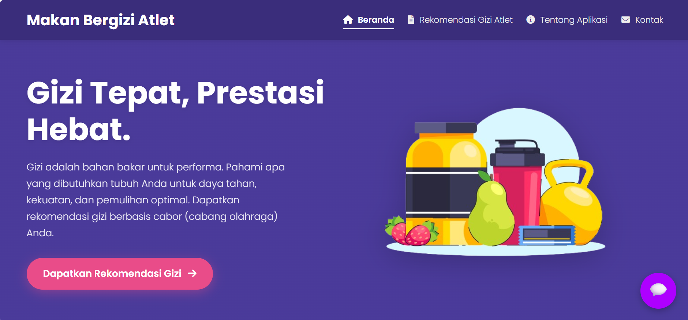

My Projects

Simple Web Assignment
Sebuah website statis sederhana yang dibuat untuk tugas kuliah, mendemonstrasikan fundamental HTML & CSS.
Lihat Proyek
Makan Bergizi Atlet
Sebuah website untuk memberikan rekomendasi makanan bergizi kepada atlet dari berbagai cabang olahraga. Terdapat AI chatbot juga
Lihat Proyek